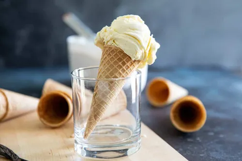
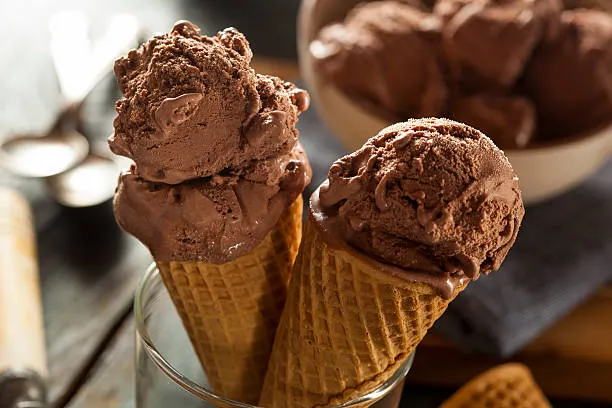
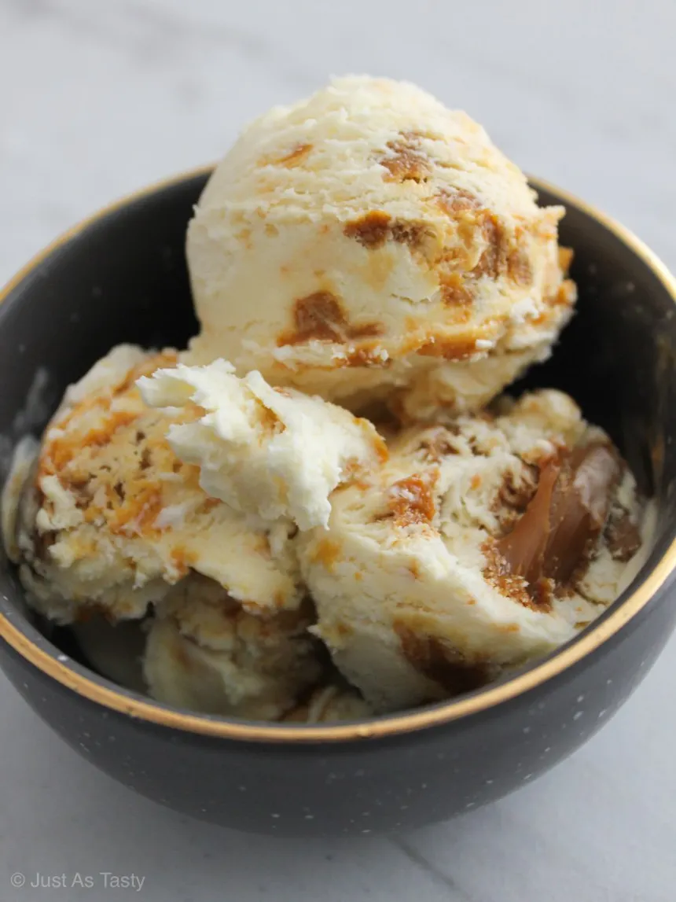
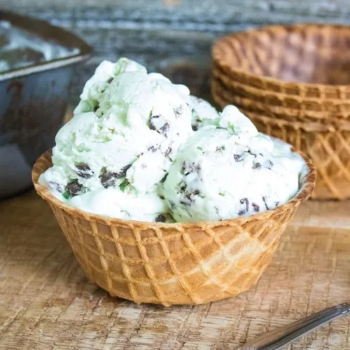

Discover Fun, Fresh, Creative Ice Cream Recipes
Tips for Perfect Ice Cream
- Prevent Ice Crystals – Keep your mixture cold before churning, use enough sugar to lower the freezing point, and store finished ice cream in shallow, airtight containers to reduce thaw-and-freeze cycles.
- Add Mix-Ins the Right Way – Fold in ingredients like chocolate chips, cookie chunks, or fruit pieces during the last 1–2 minutes of churning so they stay evenly distributed and don’t sink or turn mushy.
- Get Rich Flavor Without Heavy Fat – Use ingredients like condensed milk, egg yolks, or a small amount of cornstarch to boost creaminess, and add strong natural flavors—such as vanilla bean paste or espresso concentrate—to keep taste bold without extra cream.
- Choose the Right Tools – A basic ice cream machine improves texture dramatically, silicone spatulas help scrape every bit of mixture cleanly, and insulated storage tubs prevent ice buildup and preserve flavor longer.
Browse Recipes



